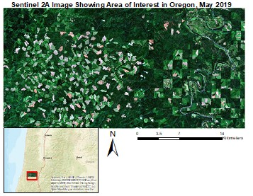
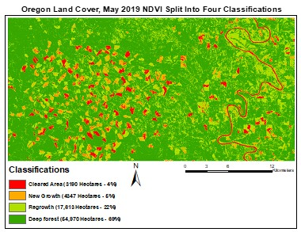
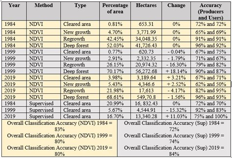
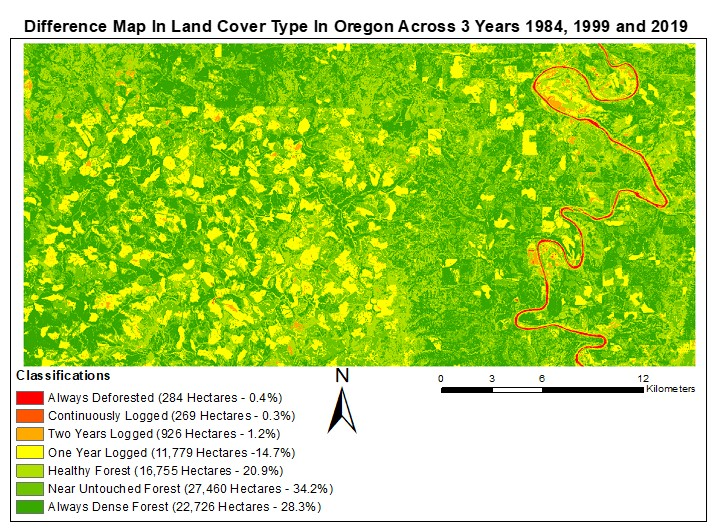

A Review of 35 Years of Logging in Oregon Through NDVI Classification
This paper has three distinct objectives. The first is to determine what percentage of different logging landcover types are present in the Area of Interest (AOI) for each of the target years. The second objective is to identify the change over time of these land cover types and determine the total area logged in the last 35 years. The final objective is to determine what affect logging has had on the region and vegetation regrowth.

This analysis was conducted with three different multispectral images across three different sensors and time periods. The earliest image is from June 1984 Landsat 5 Thematic Mapper containing 7 bands at 30m resolution. The next image is from July 1999 Landsat 7 Enhanced Thematic Mapper containing 8 bands at 30m resolution. The third image is from May 2019 using Sentinel 2A’s 12 band sensor at 20m resolution (Hagner and Reese, 2007).
Methods
As to reduce error and focus primarily on vegetation change, NDVI was selected as the classification method over commonly used maximum likelihood supervised classification method (McRoberts, 2014). Supervised Classification still provided similar support as other studies utilising NDVI classification (Zaidi et al., 2017).

For landcover percent analysis, NDVI data was split into four degrees of vegetation. Value ranges were determined from Forkuo and Frimpong’s (2012) benchmark that 135 is the likely beginning of vegetation and around 0.6 (traditional scale) is highly dense vegetation (Immerzeel et al., 2005). Pixel counts were then converted to percentages and hectares for each year’s spatial resolution. An accuracy assessment was conducted on both NDVI classes and supervised classification results. Google Earth and visible range bands were used for ground truthing (Kennedy et al., 2007). 80 random points were tested and a resulting error matrix (Gallaun et al., 2015) was produced to determine Producers and Users accuracy (Congalton, 1991).
For change over time analysis>, a data table was developed to track percent change in each classification from year to year. A map (referred to as difference map) was then developed (guild et al., 2004) integrating the three years changing classifications for each pixel. New classifications were produced to reflect the change in NDVI for each pixel over the three images. Through the difference map a total percent of land logged and untouched land could be calculated with no concerns of double counting a pixel, as would be the case if calculations were combined separately from the three years.
For effect on the Land analysis>, areas that had be logged in 1984 and 1999 had their 2019 NDVI values compared with NDVI values from regions that had never been logged. This was to see if a region could fully recover from logging or if there was still an effect on vegetation density on a region after 20 and possibly 35 years. Cleared regions were selected for 1984 and 1999 using maximum likelihood supervised classification, as it holds a lower error percentage for cleared areas compared to vegetation types and encapsulated a larger portion of freshly cleared land compared with the equivalent NDVI class. NDVI values were then clipped to these regions for each year, also masking out regions that had been deforested in a later year. The average modern NDVI values for the regions logged in 1984 and 1999 could then be compared to NDVI averages of areas that were never logged.



Stuart Ross
A Data Science Intern at Leeds Institute of Data Analytics. This was completed in my spare time as an independent learning oppertunity... and for a bit of fun too!